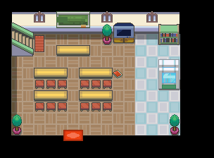
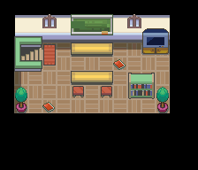

031 七大不可思议
一句话目标：与训练家学校的老师一起，逐一查清学校的七大不可思议，并面对走廊里的“精灵”。
接取地点
- 桔梗市训练家学校（地图 46:7），校内 (14,8) 的老师（
local_id 6）。 - 当前目录描述：探究训练家学校七大不可思议的真相。
准备条件
- 前置旗标 4246（入口脚本先检查，具体剧情点未解释）。
- 战斗准备：最后一项要面对野生谜拟Q（995，Lv6）。
操作步骤
- 到训练家学校 (46:7) 与老师（
local_id 6，(14,8)）对话，他说“七大不可思议的传闻……真是令人在意呢。”并邀你一起调查。 - 答应后出现“接受任务:<七大不可思议>”，他说“我们会在深夜无人的时候调查。如果你准备好了，就和我说一声吧！”。
- 此后每次与老师对话，他会依次讲述下一则传闻；同意“准备好”后，你被传送到对应地图调查（进度由变量 20890 推进）：
- 许愿树：学校附近树林，传送到
56:0。传说只有恋爱和诅咒的愿望能实现。 - 第二则传闻（对白文本未提取），传送到
56:1。 - 会动的玩偶：二楼教室书架上的精灵玩偶会动，传送到
56:3。 - 半夜的老师：有人见老师晚上偷偷到学校，传送到
56:4。 - 地下室：学校下面有一间老师禁止进入的地下室，传送到
56:5。 - 时间跳跃：坐在教室里时间会突然变快，传送到
56:6。 - 第七则传闻（对白文本未提取），传送到
56:7。 - 在 56:7 走到 (6,7) 触发事件：出现“来玩吧……？”，选择“是”后与野生谜拟Q（995，Lv6）战斗。
- 战斗结束后获得报酬，任务完成；回到学校后老师说“后来我鼓起勇气去了走廊……然后，我遇到了这只精灵！……现在我和小Q的目标，是再次赢得学校第一！”。
交付检查
- 依次完成七则调查、在 56:7 完成谜拟Q事件（旗标 5860 置位）后完赛；每则都需要先与老师对话、确认“准备好”才会被传送。
奖励
- 电气球 ×1
- 8 BracerPoints
容易卡住的位置
- 七则传闻必须按老师给出的顺序逐条进行，不能跳；每次返回都找同一个老师 (46:7, (14,8))。
- 最后一战是野生谜拟Q（
setwildbattleLv6），脚本只证明对战设置，不保证可捕获。 - 各调查场景位于
56:0–56:7子地图，其进行脚本不在本包内，具体谜题细节需另查。
来源与待补
- 包：
data/quest_packets/031.json；入口脚本0x08F50B85（map 46:7 / local_id 6）；接取/推进脚本0x08AE2F82、0x08AE2FD3、0x08AE39C4及各传闻分支；终局脚本0x08AE5251、0x08AE5426、0x08AE5966、0x08AE60EA。 - 相关宝可梦：谜拟Q；相关道具：电气球。
- 未定位：20890==1、==6 两则传闻的对白文本未提取（分别传送到
56:1、56:7）；56:0–56:7各调查场景脚本不在本包。
地点地图
共享RGB底图；点击可缩放定位。数字对应本页相关地点，不代表地图上全部事件。
桔梗市

1 七大不可思议（14,8） 底图有22个图块缺少原始数据。
桔梗市

1 七大不可思议（6,7） 底图有18个图块缺少原始数据。